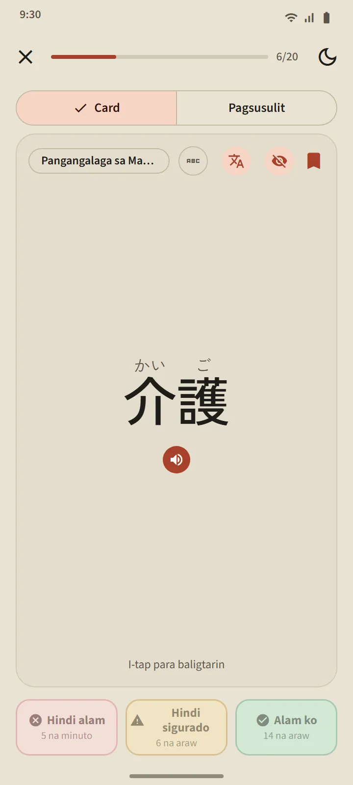
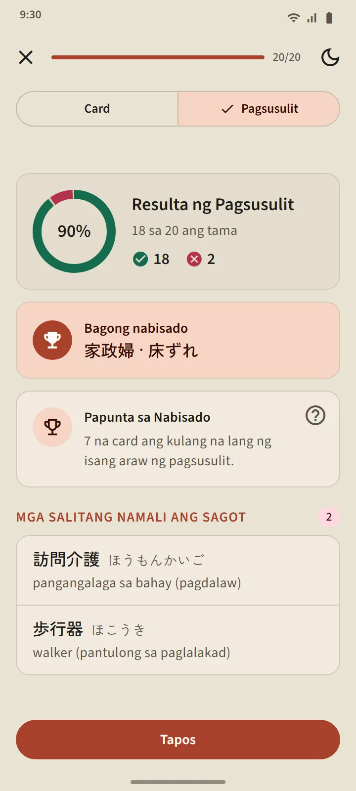
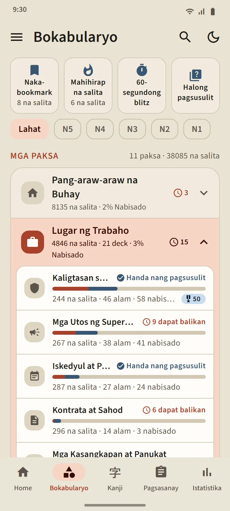
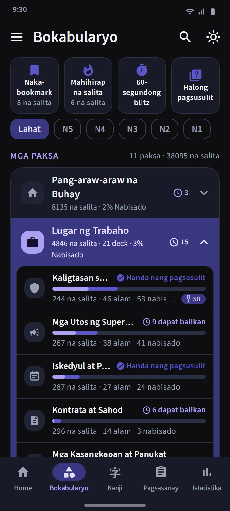

Mga card na alam kung kailan ka malapit nang makalimot
Ipinapakita ng harap ng card ang salita (may furigana kung gusto mo). I-tap para i-flip: pagbasa, romaji, kahulugan, at mga bumubuong kanji, kasama ang button ng pagbigkas. Pagkatapos, i-rate ang sarili mo gamit ang isa sa tatlong button.
Ang pag-iiskedyul ay ginagawa ng FSRS, ang parehong spaced repetition algorithm na ginagamit ng mga modernong flashcard app. Ipinapakita ng bawat button kung kailan babalik ang salita: ilang minuto, araw, o linggo mula ngayon. Kung mas madalas mong sagutin ng Alam ko, mas humahaba ang pagitan.
- Hindi alam ang magbabalik sa salita sa Natututo mula sa anumang yugto.
- Hindi sigurado ang magpapaikli sa pagitan nito.
- Alam ko ang maglilipat sa salita sa Alam na at magtutulak sa susunod na review nang mas malayo.


Apat na yugto, at kailangang patunayan ang Nabisado
Umaakyat ang bawat salita sa apat na yugto: Bago, Natututo, Alam na, Nabisado. Hanggang Alam na lang ang naaabot ng salita kapag pinindot mo ang Alam ko sa card. Para makarating sa Nabisado, kailangan mo itong masagot nang tama sa pagsusulit sa tatlong magkakaibang araw. Patuloy na sinusubok ang mga nabisadong salita kapag due na ang mga ito, at bumababa ang mga ito kapag nagkamali ka.
Bumubukas ang pagsusulit ng isang deck kapag 20 sa mga salita nito ay Alam na o Nabisado (agad na bumubukas ang mas maliliit na deck kapag alam na ang lahat ng salita nila). Dalawang direksyon ang mga tanong: mula salita papunta sa kahulugan, at mula kahulugan papunta sa salita. Sa dulo, makikita mo ang mga bagong nabisadong salita, ang mga isang hakbang na lang, at ang mga nagkamali ka.


Mag-aral ayon sa paksa, subaybayan ang bawat salita
Nahahati sa 11 grupo ang tab na Bokabularyo, at may maliliit na deck ang bawat grupo. Ang filter sa itaas ay nagpapaliit ng lahat sa isang antas ng JLPT. May sariling screen ang bawat deck: isang ring ng porsiyento ng pagkakumpleto, ang listahan ng salita na may katayuan ng bawat isa, isang filter na Natututo/Alam na/Nabisado, at ang mga button na Mag-aral at Pagsusulit.
Ang grupong Lugar ng Trabaho ay may 21 deck para sa mga kandidatong pupunta sa Japan para magtrabaho: Kaligtasan sa Trabaho, Mga Utos ng Superbisor, Iskedyul at Pagpasok, Kontrata at Sahod, Mga Kasangkapan at Panukat, Lohistika at Bodega, Opisina at Dokumento, Paggawa ng Pagkain, Pangangalaga sa Matatanda, Pabrika at Produksyon, Makinaryang Pang-industriya, Elektroniks at Kuryente, Konstruksyon, Restawran at Kusina, Agrikultura, Paggawa ng Barko, Paglilinis ng Gusali, Pangisdaan, Sasakyan at Pagkumpuni, Abyasyon at Paliparan, Hotel at Panuluyan. Para sa pamumuhay sa Japan, may mga deck para sa transportasyon, pamimili at pera, tahanan at kasangkapan, bukod pa sa mga grupong Lipunan at Administrasyon at Katawan at Kalusugan.
| Grupo | Mga deck |
|---|---|
| Pang-araw-araw na Buhay | 16 |
| Lugar ng Trabaho | 21 |
| Lipunan at Administrasyon | 8 |
| Katawan at Kalusugan | 8 |
| Ugali at Damdamin | 8 |
| Uri ng Salita | 5 |
| Teknolohiya at Media | 4 |
| Kalikasan at Agham | 10 |
| Akademiko at Opinyon | 8 |
| Kultura at Relihiyon | 4 |
| Palakasan at Laro | 3 |


Mga espesyal na deck at mabilis na pagsasanay
Sa itaas ng listahan ng grupo ay may tatlong deck na kumukuha mula sa lahat ng deck: Naka-bookmark (mga salitang binigyan mo ng bituin), Mahihirap na salita (kusang napupuno ng mga salitang paulit-ulit mong nakakalimutan sa card o nagkakamali ka sa pagsusulit), at ang 60-segundong blitz (kasindami ng card na kasya sa isang minuto). Ang ikaapat na tile, ang Halong pagsusulit, ay sumusubok sa mga salitang Alam na at Nabisado mula sa lahat ng deck nang sabay-sabay.

Pocket dictionary ng 38,085 salita
Mahahanap ng icon ng paghahanap sa header ang anumang salita gamit ang kanji, kana, romaji, o kahulugan. Niraranggo ang mga resulta ayon sa lakas ng pagtutugma, at pinapayagan ang maliliit na pagkakaiba sa baybay ng romaji: ang shinbun at shimbun, koohii at kōhī, arigato at arigatou ay parehong nagdadala sa iisang salita. May detail page ang bawat salita: ang yugto at susunod na review nito, kahulugan, mga bumubuong kanji kasama ang kanilang mga pagbasa, at button ng pagbigkas.


Mga antas at wika ng mga kahulugan
Tantiya lang ang mga antas ng salita: hindi naglalathala ang Japan Foundation ng opisyal na listahan ng bokabularyo, kaya binuo ang pagtutugma mula sa lumang mga listahan ng JLPT at dalas ng paggamit. Walang hiwalay na antas ng salitang "JFT": sinusubok ng JFT-Basic ang parehong pangunahing bokabularyo ng N5 at N4, dagdag ang mga salita sa trabaho.
Kumpleto ang mga kahulugan sa 11 wika. Sakop ng Khmer at Tsino ang bawat libreng salita; ipinapakita sa Ingles ang mga salitang hindi pa naisasalin. Maaaring piliin sa Mga Setting ang wika ng salin nang hiwalay sa wika ng interface.
| Antas | Mga salita | Libre |
|---|---|---|
| N5 | 1,030 | 1,007 |
| N4 | 2,044 | 1,503 |
| N3 | 11,230 | 4,097 |
| N2 | 11,309 | 2,290 |
| N1 | 12,472 | 503 |